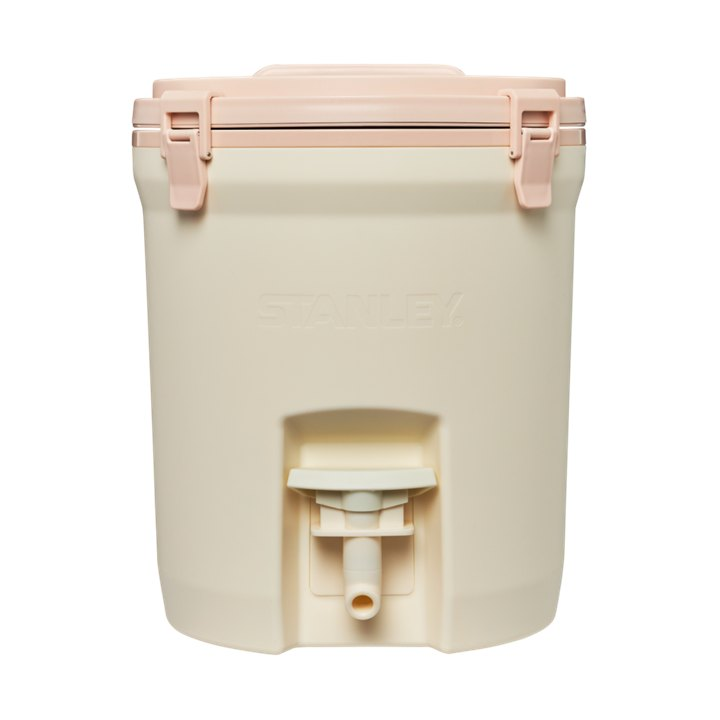
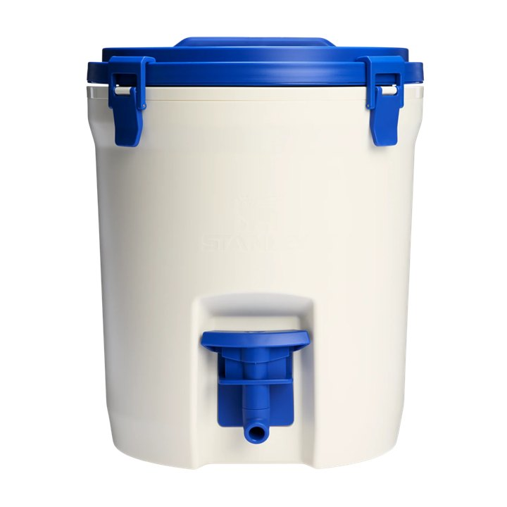
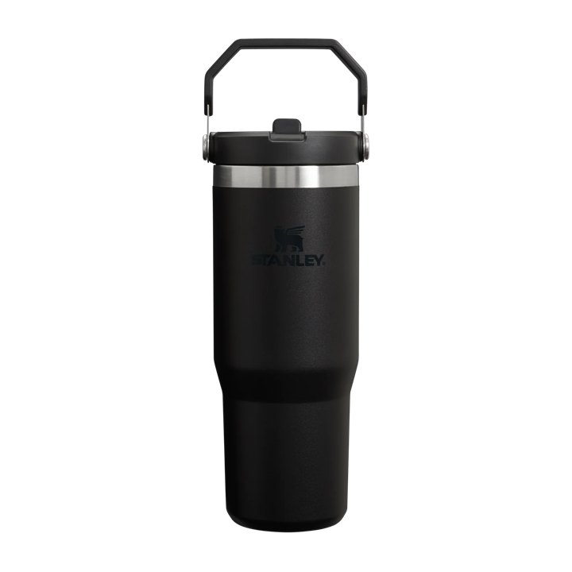
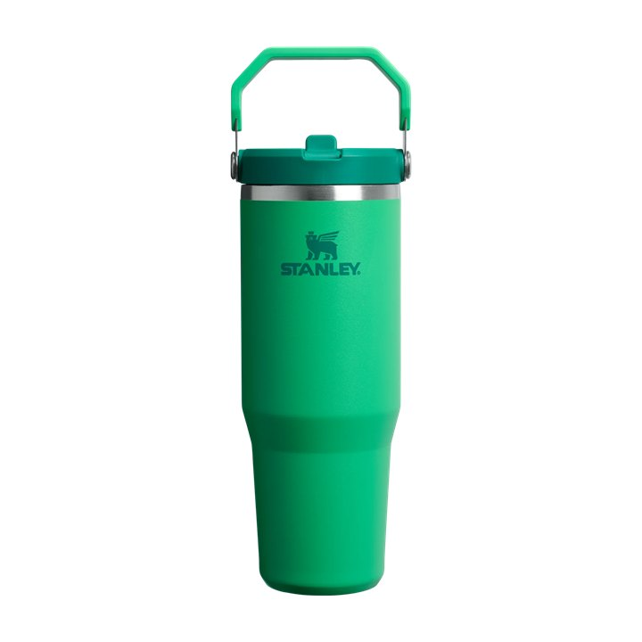
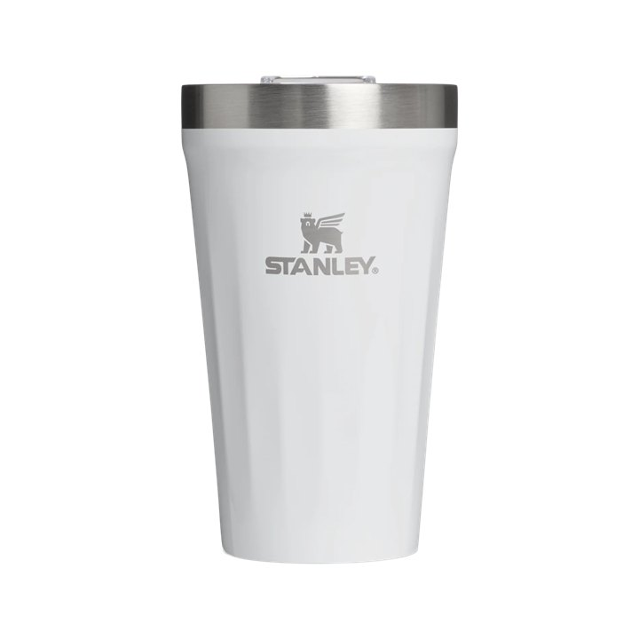
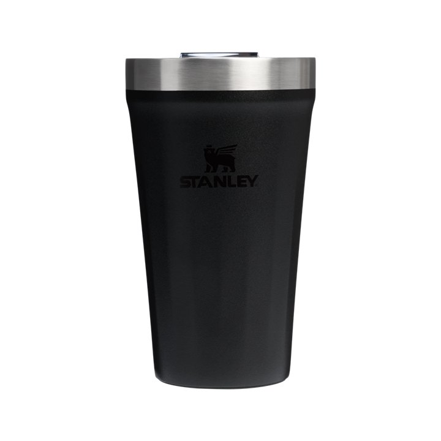

Instagram como cancha
Historias, posts o reels con tu Stanley, etiquetando a @Stanley1913_Bolivia.
Compraste Stanley, registrá tu compra y completá 12 misiones compartiendo tus momentos futboleros en Instagram para tener la oportunidad de ganar premios Stanley según tu nivel de participación y los sellos conseguidos.
Inscripciones abiertas hasta el sábado 27 de junio de 2026, 20:00 h
Cierre de inscripciones
Válido para compras Stanley desde el 1 de mayo de 2026 en tienda Stanley Bolivia, web Stanley Bolivia y distribuidores autorizados.
Es una experiencia digital para compradores Stanley Bolivia: completás misiones en Instagram, cargás tu captura como evidencia y desbloqueás sellos en tu pasaporte. Mientras más participás, más oportunidades tenés de acceder a premios Stanley.
Historias, posts o reels con tu Stanley, etiquetando a @Stanley1913_Bolivia.
Doce retos de comunidad, con algunas misiones bloqueadas por semana.
Al subir tu captura, la misión queda completada y el sello se desbloquea.
Una compra válida habilita una inscripción para una persona participante.
Vas a ver tus misiones, sellos, nivel actual y próximos beneficios.
Subí historia, post o reel con tu Stanley y etiquetá a @Stanley1913_Bolivia.
Tomá captura de la publicación y subila a la misión correspondiente.
Cada misión completada suma un sello a tu Pasaporte Stanley.
Mientras más sellos completás, más niveles desbloqueás y más oportunidades tenés de participar por premios Stanley.
Tu nivel depende de la cantidad de sellos completados. Desde Silver se habilita la participación por premios intermedios; Gold habilita la participación en el sorteo general de la campaña y Legend habilita la participación en el sorteo del Kit especial Stanley.
Primer nivel del pasaporte.
Habilita la participación por premios intermedios de la campaña.
Habilita la participación en el sorteo general de la campaña.
Nivel máximo: habilita la participación en el sorteo del Kit especial Stanley.
Tres retos por semana. Podés ver el nombre de los retos futuros como pista, pero las características y la carga se habilitan semana por semana.
Mostrá tu Stanley acompañando tu día futbolero.
Compartí tu previa con tu producto Stanley favorito.
Subí un momento usando colores de celebración.
Características bloqueadas hasta su semana.
Características bloqueadas hasta su semana.
Características bloqueadas hasta su semana.
Características bloqueadas hasta su semana.
Características bloqueadas hasta su semana.
Características bloqueadas hasta su semana.
Características bloqueadas hasta su semana.
Desafío especial para completar el sello 11.
Cierre Legend para participar por el Kit especial Stanley.
Publicá tu misión en historias, post o reel; etiquetá a @Stanley1913_Bolivia; tomá captura; subila a tu Pasaporte; desbloqueá tu sello.
Abrir Mi PasaporteMientras más sellos completás, más niveles desbloqueás y más oportunidades tenés de participar por premios Stanley.


Para vivir la fiesta del fútbol con hidratación siempre lista.
Ver en la tienda

El compañero ideal para cada misión del pasaporte.
Ver en la tienda

Para sumar estilo Stanley a tus celebraciones.
Ver en la tiendaContenido destacado de participantes: momentos Stanley, misiones creativas y celebraciones compartidas en Instagram.
@participante
@participante
@participante
@participante
Completá tus datos y subí tu factura o respaldo válido. Después vas directo a Mi Pasaporte para empezar tus misiones.
Inscripciones hasta el sábado 27 de junio de 2026, 20:00 h
Debés cargar factura o respaldo válido de compra. Stanley Bolivia podrá revisar y validar la información presentada.
El CI es obligatorio y será el único documento válido para validar tu identidad y realizar la entrega de premios, en caso de resultar ganador.
Completá la misión, publicá el contenido en Instagram, etiquetá a @Stanley1913_Bolivia, tomá captura y subila a tu Pasaporte.
Sí. Cualquiera de esos formatos sirve, siempre que el contenido corresponda a la misión y etiquete a @Stanley1913_Bolivia.
No. Pasaporte Stanley muestra progreso, niveles, sellos y contenido destacado de comunidad, no ranking de usuarios.
Al completar 7 sellos alcanzás Silver y quedás habilitado para participar por premios intermedios, sujeto a validación de la campaña.
Al completar 10 sellos alcanzás Gold y quedás habilitado para participar en el sorteo general, sujeto a validación de la campaña.
Legend es el nivel máximo: 12 sellos completados y participación habilitada para el sorteo del Kit especial Stanley.
No. Es una misión lúdica y no competitiva. La recompensa es sólo el sello por participar.
No. Es una campaña recreativa de Stanley Bolivia y no está afiliada, patrocinada ni administrada por ninguna organización, torneo o competición oficial.